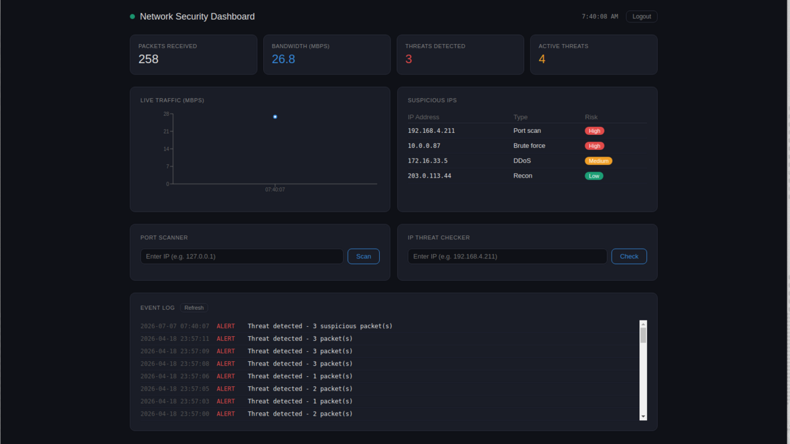

Network Security Dashboard
2025Python · React · Flask · SQLite · AbuseIPDB API · WebSockets
- Real-time network security monitoring dashboard with live traffic graphs streaming every 2 seconds2秒ごとに更新されるライブトラフィックグラフを備えたリアルタイム・ネットワークセキュリティ監視ダッシュボード
- AbuseIPDB integration for IP reputation checks — country, abuse score, total reports, threat statusAbuseIPDB連携によるIPレピュテーション確認（国・悪用スコア・報告総数・脅威ステータス）
- Port scanner covering 13 common ports (FTP, SSH, HTTP, MySQL, etc.) with automated Gmail alerts and cooldown logic主要13ポート（FTP、SSH、HTTP、MySQL等）を対象としたポートスキャナーと、クールダウン機能付きのGmail自動通知
- All detected threats persisted to an SQLite event log; backend on Render, frontend on Vercel検出した脅威はSQLiteのイベントログに保存。バックエンドはRender、フロントエンドはVercelにデプロイ